| 日付 | 2019年5月26日（日） |
|---|---|
| 山域 | 赤城・榛名 |
| メンバー | 家族（長男・5歳） |
| 山行形態 | 子連れ日帰り |
| アクセス | 車 |
| ルート (Map) | 鍋割山登山口 (8:36) - (10:09) 鍋割山 (10:55) - (11:21) 荒山高原 - (11:35) 棚上十字路 (11:47) - (12:25) 赤城森林公園 - (13:22) 鍋割山登山口 |
今日は娘が水泳の進級試験のため、息子と二人で山に行くことにする。
息子と二人だけでのおでかけは、息子がまだ0歳だった時に登った
十二ヶ岳～節刀ヶ岳以来、5年振りだ。
あまり遠出はしたくなかったが、近場に登りたい山が無かったため
少し遠出して赤城山の一峰・鍋割山に登ることにする。
登山口そばの駐車スペースに車を停める。標高800m。
すでに多くの車が停まっている。
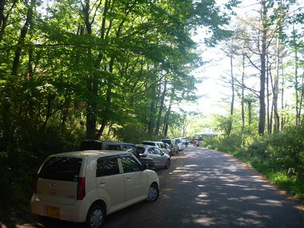
登山口は駐車スペースのすぐ側だ。
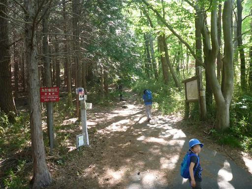
きれいに整備された道を登って行く。
ヤマツツジの花が咲いていて華やかだ。
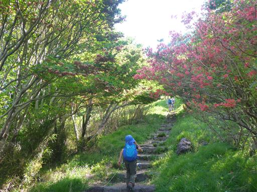
この登山道は急斜面が続く。
半ば岩場のような道をよじ登っていく。
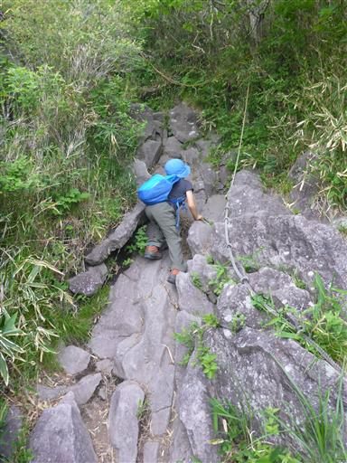
しばらく歩くと平坦地に出て視界が開ける。
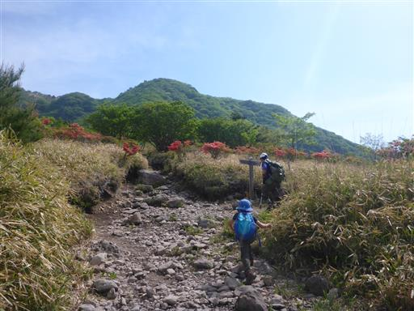
この辺りはヤマツツジの群生地。
あちらこちらで赤い花を咲かせている。
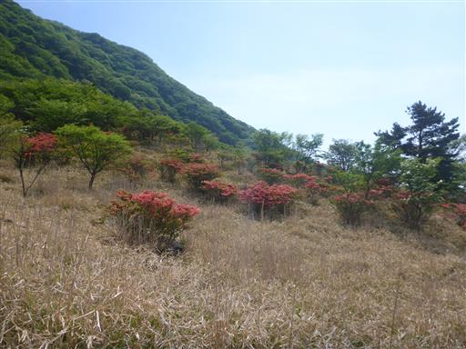
近くに榛名山の姿が見えている。
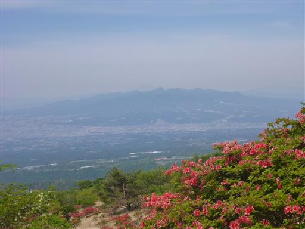
再び樹林帯に入り、岩だらけの道を歩いていく。
登山口付近で挨拶を交わした「おじちゃんとおばちゃん」と前後しながら登って行く。
声をかけられ息子は上機嫌だ。
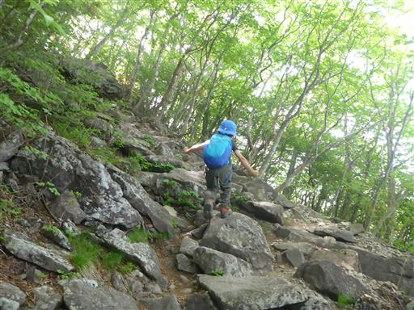
程よい高さの木にぶら下がって遊ぶ。
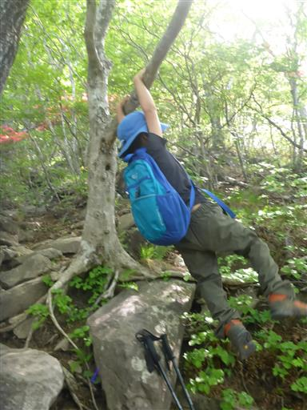
急斜面の登山道は続く。
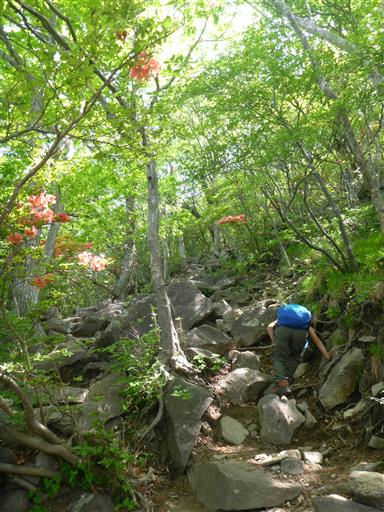
美しい虫を発見。
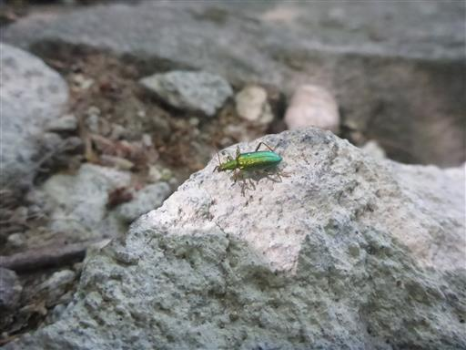
山頂近くになり再び平坦な道になる。
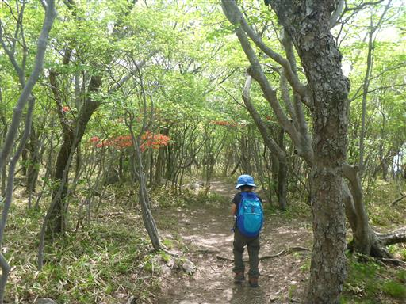
木登り。
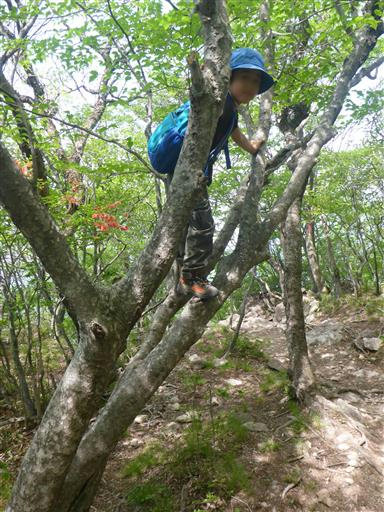
ヤマツツジが咲く登山道を歩いていくと、山頂に続く階段が見えてくる。
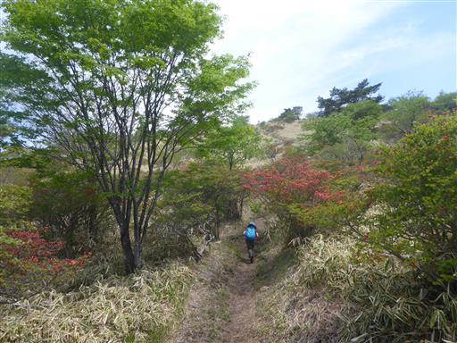
最後は山頂まで長く続く階段を登って行く。
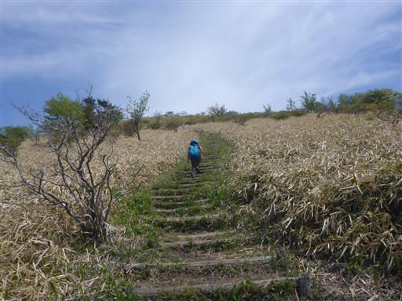
階段を登りきると鍋割山の山頂に到着する。標高1332m。
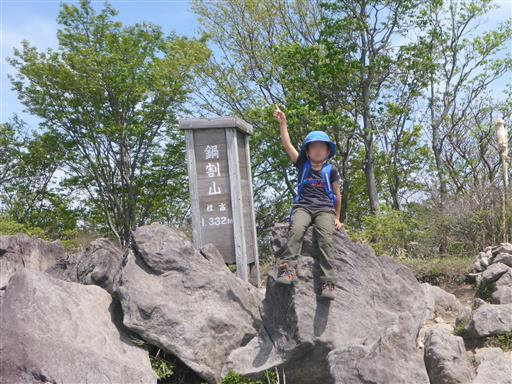
山頂は明るく開けている。ここは風が吹き抜けて涼しい。
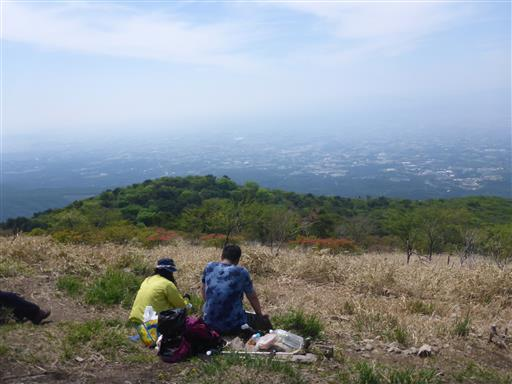
山々がいくつも折り重なっている。少々霞んでいるが素晴らしい展望だ。
息子は「おじちゃん」が登って来るのを待ってから、隣に行って一緒に昼食を食べ始める。
すっかりなついたようだ。
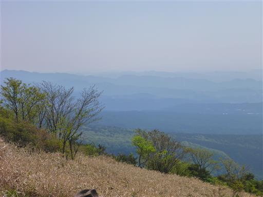
昼食をとったら山頂を出発する。
「おじちゃん」たちは元来た道を下るという事で、ここでお別れだ。
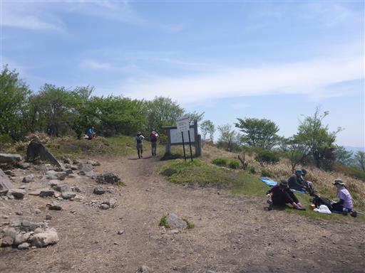
我々はさらに北上して荒山高原を目指す。
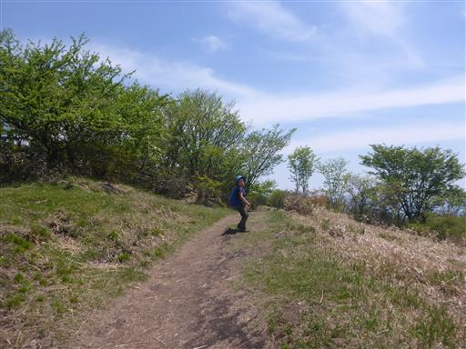
この登山道がとにかく素晴らしい。
緩やかなアップダウンの歩きやすい道で、
新緑とヤマツツジに包まれた美しい風景が周囲に広がる。
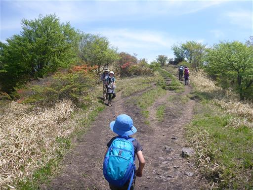
鍋割山～荒山高原間は多くの登山者とすれ違う。
鍋割山に登るメインルートのため、団体登山者や子連れ登山者もよく見かける。
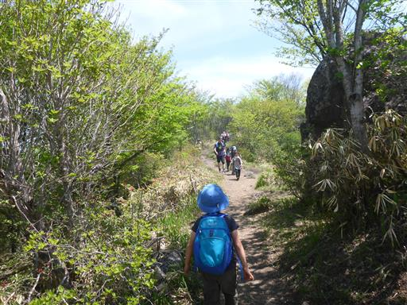
大きく視界が開ける。目の前の山が荒山、その奥が地蔵岳だ。
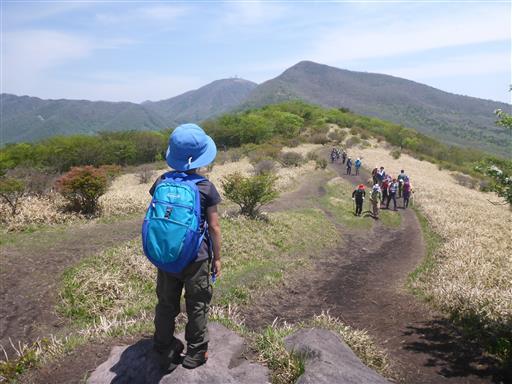
遠くには谷川岳など雪に覆われた上越国境の山々が見渡せる。
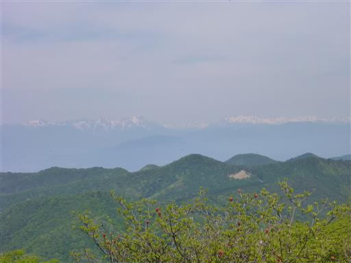
丸い山が2つ並んでいる。以前登った鈴ヶ岳の辺りだろうか？
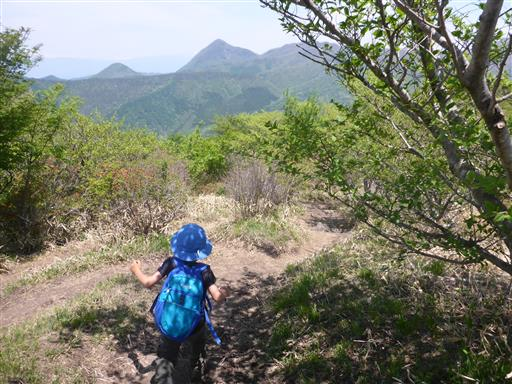
荒山高原に到着する。ここもまた素晴らしい景観だ。
以前、荒山に登った時以来の訪問だ。
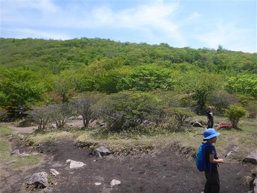
ここから棚上十字路方面に歩を進める。
ここからはマイナールートで登山者の数がぐっと少なくなる。
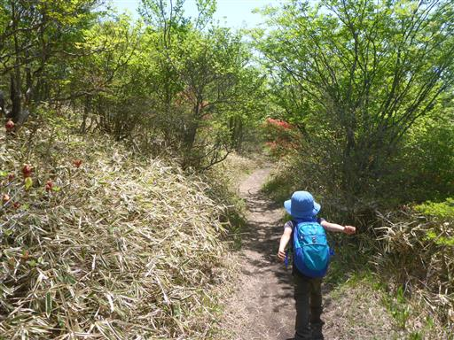
棚上十字路に到着。側に芝の広場があり、ここでおやつ休憩をとる。
4年前に荒山に登った時も訪れた場所で、当時の記憶がよみがえる。
以前ここでかけっこをしたという話をしたら、やりたいと言い出したため
再びここで息子とかけっこをする。
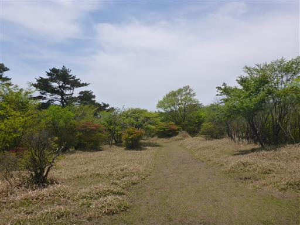
周囲の新緑と花々が美しい。
のんびりしたいところだが、まだ行程が長いので、10分ほどで出発することにする。
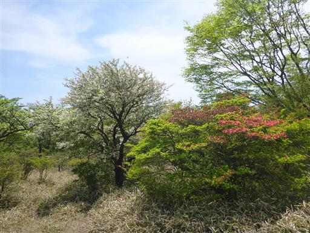
下山中に出会った、本山行で一番鮮やかだったヤマツツジ。
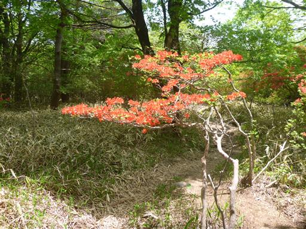
荒山登山口の駐車場に下山する。
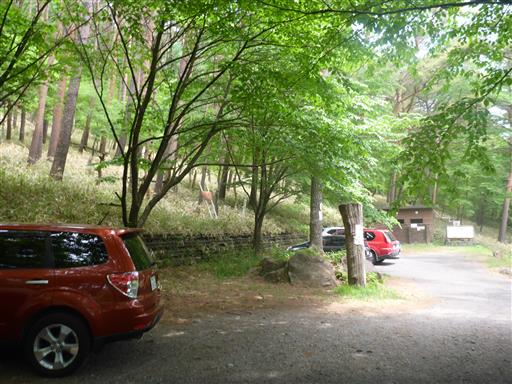
ここからは車を停めたところまで長い車道歩きだ。
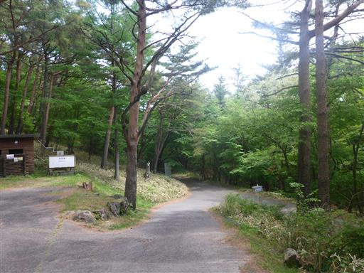
水源地。水がジャブジャブ出ていて、一口飲んでみる。
赤城山の山頂部はすっかり観光地化されているが水質は問題ないのだろうか？
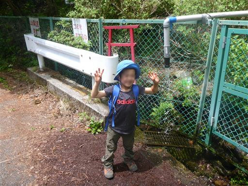
道中、バイクのサーキットがあり、とにかくやかましい。
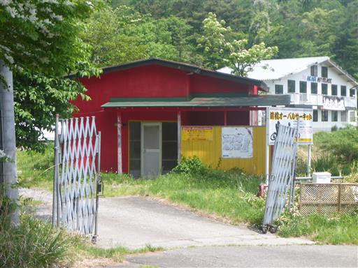
林道歩きは長い。息子は林道を歩き始めた途端、足が痛いと言い出し
止まっては歩き止まっては歩きを繰り返し、励ましながら1時間歩いて
ようやく車に辿り着く。
最後の車道歩きは辛かったが、鍋割山は新緑とヤマツツジに包まれた
素晴らしい景観の山だった。
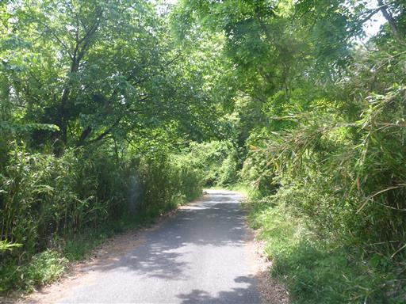